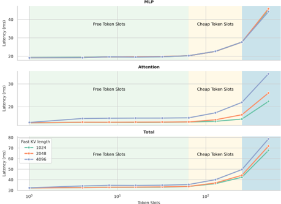
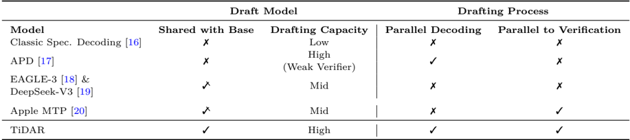
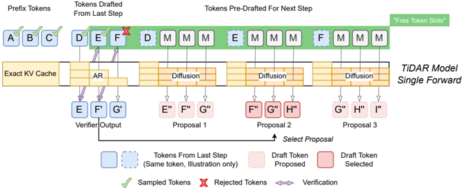
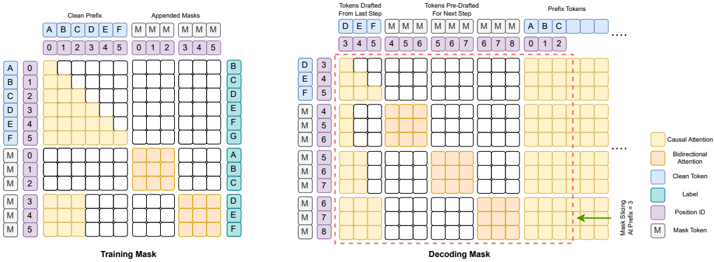
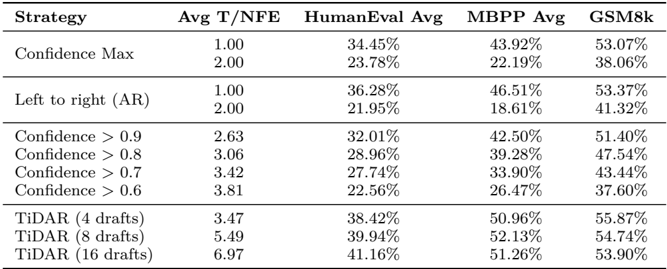
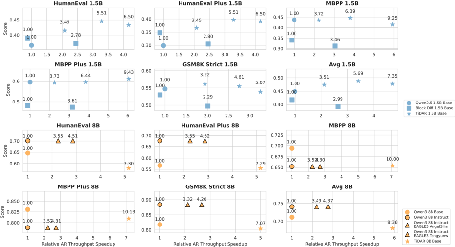
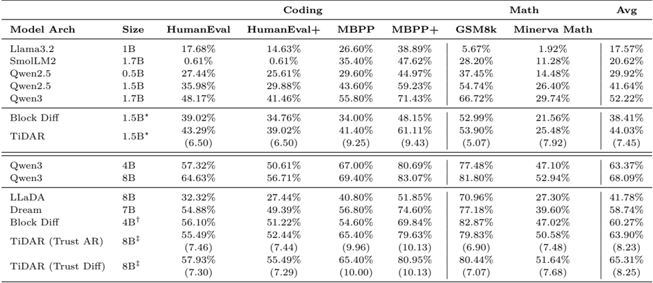

TiDAR 值得跟踪复现，但不能直接当作 serving 收益结论
面向模型架构和 inference platform leaders，当前最稳的读法是：TiDAR 不是又一个泛泛 decoding 加速故事，而是一个把 diffusion-style parallel drafting 放进 AR sampling 质量保护里的 single-model architecture。它的论文信号足够进入受控复现，但还没有覆盖生产 serving 的关键外推条件。
论文给出强信号，决策动作应是复现而非上线判断
最强证据是 TiDAR 1.5B / 8B 相对同规模 AR baseline 分别报告 4.71x 和 5.91x decoding throughput speedup，同时在 generative 与 likelihood 任务上保持接近 AR 的质量；但这些结果来自单 H100、batch size 1 的评测口径。1
关键前提是空闲 token slots 能承载可信草稿
TiDAR 的 serving 叙事不应从“diffusion 更快”开始，而应从 Figure 1 的 profiling 开始：在 memory-bound decoding 区间，一次 forward 多带一些 token slots 可能不会等比例增加 latency。
论文用 Qwen3-32B、NVIDIA H100、batch size 1、Flash Attention 2 做 profiling，展示 MLP、Attention 和 Total latency 随 token slots 增加的变化；绿色区间被标成 Free Token Slots，黄色区间被标成 Cheap Token Slots。这个图支撑的是“为什么 TiDAR 有机会把 diffusion drafting 放进同一次 forward”，而不是证明任何真实平台上的 end-to-end QPS、tail latency 或 GPU utilization 已经改善。2

TiDAR 补的是 draft capacity 与并行验证的双重缺口
与 classic speculative decoding、EAGLE-3、MTP、Block Diffusion 相比，TiDAR 的差异不是“也能多 token”，而是 shared high-capacity drafter、parallel-to-verification、AR sampling quality guard 三者放在一个模型里。
Table 1 对 speculative framework 的比较很适合放进 deck：classic speculative decoding 有独立弱 drafter；EAGLE-3 / DeepSeek-V3 / Apple MTP 改进了共享或多 token 预测，但仍不完全等价于 diffusion pre-drafting 与 AR verification 同时发生；TiDAR 被论文标成 model shared、high drafting capacity、parallel decoding、parallel to verification 都满足。6
Classic speculative decoding
一句话定位：用弱 draft model 提前猜 token，再由强 AR model 接受或拒绝。
- 核心机制
- 草稿和验证分离，收益依赖 acceptance rate 与 draft 成本。
- 代表证据
- Table 1 将其标为非共享模型、低 drafting capacity、非并行验证。
- 适用边界
- 适合已有兼容 drafter 的场景；draft 弱时吞吐上限明显。
- 与 TiDAR 关系
- TiDAR 试图把 drafter 提升为同模型高容量 diffusion 分支。
EAGLE-3 / speculative head
一句话定位：在 AR 模型旁接更强 draft head，改善 classic speculative 的 draft 质量。
- 核心机制
- 通过额外层或 head 生成候选 token，再走 AR 验证路径。
- 代表证据
- Figure 4 把 EAGLE-3 8B instruct 点与 TiDAR 8B 放在 throughput-quality 图中比较。5
- 适用边界
- 论文脚注说明 8B 对比受可用 EAGLE-3 权重影响，不能当成所有 base model 的严格同权重结论。
- 与 TiDAR 关系
- 它是最重要的 speculative comparator，但 apples-to-apples 程度需要复现时重新设计。
MTP / multi-token prediction
一句话定位：让 AR-adjacent 模型一次预测多个未来 token。
- 核心机制
- 通过多 token head 或额外结构扩展 next-token prediction。
- 代表证据
- Table 1 把 DeepSeek-V3 / Apple MTP 标成 shared with base 与 parallel-to-verification，但 drafting capacity 仍为 mid。
- 适用边界
- 工程上更靠近现有 AR serving；但不是 diffusion-style block pre-drafting。
- 与 TiDAR 关系
- 是 systems 近邻；TiDAR 的论点是 diffusion 分支提供更强草稿容量。
Block Diffusion / Dream / LLaDA
一句话定位：用 masked diffusion 并行生成多个 token，但质量与并行度存在张力。
- 核心机制
- 并行预测 masked positions；质量最好时常需要更保守的 decoding。
- 代表证据
- Table 2/3 与 Figure 4 同时比较 Block Diff、Dream、LLaDA 和 TiDAR。
- 适用边界
- 并行潜力强，但如果为质量退回一 token per forward，系统收益会被削弱。
- 与 TiDAR 关系
- TiDAR 借 diffusion 做草稿，但用 AR sampling 保护最终输出质量。
| 路线 | 优化轴 | draft capacity | 验证关系 | 对本 deck 的含义 |
|---|---|---|---|---|
| Classic speculative | 独立弱 drafter | Low | 串行 | 作为熟悉参照，解释 TiDAR 为什么强调 shared high-capacity。 |
| EAGLE-3 | speculative head | Mid | 非完全并行 | 重要 comparator，但需注意权重和 model pairing。 |
| MTP | 多 token head | Mid | 可并行 | 更接近现有 AR serving 的相邻路线。 |
| Diffusion LLM | masked parallel decoding | High | 不靠 AR guard | 解释 TiDAR 为什么不能只看 diffusion speed。 |
| TiDAR | diffusion draft + AR sample | High | 并行 | 值得复现的差异化点：同一次 forward 验旧草稿、预写新草稿。 |

结构化 mask 让同一次 forward 同时验旧草稿、预写新草稿
TiDAR 的架构可以压缩成一句：prefix 复用 exact KV cache；上一步 drafted tokens 用 AR rejection sampling 验证；下一步 mask tokens 用 diffusion 预生成 proposals。
Figure 2 的关键信息是三个区段：Prefix Tokens、Tokens Drafted From Last Step、Tokens Pre-Drafted For Next Step。AR 部分对上一步草稿做 verifier output；diffusion 部分为下一步生成多个 proposal；被接受的 prefix 决定采用哪一路 pre-draft。Figure 3 则把这个想法落到 training mask 和 decoding mask，说明 clean tokens 走 causal attention，mask tokens 在 block 内 bidirectional attention，并通过 reordering / slicing 复用预初始化 mask。3


质量和吞吐信号强，但平台收益仍要重新证明
Table 2/3 说明 TiDAR 在 generative 与 likelihood 任务上不是只追吞吐；Table 4 说明普通 confidence decoding 提高 T/NFE 后质量会明显掉，而 TiDAR draft rows 保持更高任务分数。
最适合 PPT 使用的证据组合是：Figure 4 给 throughput-quality frontier 的直觉，Table 2 给 generative task 数字，Table 3 给 likelihood task 兼容性，Table 4 给 decoding strategy ablation。这样可以避免只引用 4.71x / 5.91x 两个 headline speedup，而没有说明任务范围和比较对象。5



下一步应复测三个门槛：质量、吞吐、serving 假设
如果后续进入 6-7 页 deck，本阶段结论应是“tracking / controlled replication”，并把上线判断推迟到本地 backend 复测之后。
| 复测门槛 | 论文当前信号 | 本地必须补的证明 | 建议状态 |
|---|---|---|---|
| 质量不退化 | Table 2/3 显示 TiDAR 接近或部分超过同规模 AR / diffusion baseline。 | 用内部 coding/math/chat eval、采样策略和拒绝采样实现复测质量。 | 进入复现 |
| 吞吐可复现 | Figure 4 与结论报告 4.71x / 5.91x relative AR throughput speedup。 | 在本地 kernels、continuous batching、真实 prompt length 分布下复测 tok/s、TTFT、TPOT、tail latency。 | 进入复现 |
| 平台假设成立 | Figure 1 支撑 free token slots；限制部分说明 batch size、long context、custom kernels 仍需探索。 | 验证 free slots 是否存在于本地 GPU、模型尺寸、batching 策略、KV cache 管理和 scheduler 组合中。 | 不能外推 |
| 集成复杂度可控 | Figure 2/3 显示架构需要 mask slicing/reordering、exact KV cache、proposal selection。 | 估算实现复杂度、debug surface、kernel dependency、与现有 serving stack 的改造成本。 | 需专项评估 |
参考资料与定位
- [S1] TiDAR: Think in Diffusion, Talk in Autoregression, arXiv:2511.08923v1, abstract / introduction / limitations / conclusion; local XML: forward-tests/ppt-deep-search/tidar-hitl/candidate/input/pdf_xml/final/tidar.xml. ↩
- [F1] Figure 1: Latency Scaling over Token Slots, Qwen3-32B on NVIDIA H100, batch size 1, Flash Attention 2; local image: review/assets/figure_1_free_token_slots.png. ↩
- [F2] Figure 2: TiDAR Architecture, single forward sampling and pre-drafting mechanism; local image: review/assets/figure_2_architecture.png. ↩
- [F3] Figure 3: TiDAR Attention Masks, training and decoding mask design; local image: review/assets/figure_3_attention_masks.png. ↩
- [F4] Figure 4: Efficiency-Quality Benchmarking, AR / EAGLE-3 / Block Diffusion / TiDAR comparisons; local image: review/assets/figure_4_efficiency_quality.png. ↩
- [T1] Table 1: Comparison among Speculative Frameworks; local image: review/assets/table_1_spec_frameworks.png. ↩
- [T2] Table 2: Generative Evaluation Results, HumanEval / MBPP / GSM8k / Minerva Math; local image: review/assets/table_2_generative_eval.png. ↩
- [T3] Table 3: Likelihood Evaluation Results, MMLU / ARC / Hellaswag / PIQA / Winogrande; local image: review/assets/table_3_likelihood_eval.png. ↩
- [T4] Table 4: Comparing Different Decoding Strategies, confidence decoding / AR / TiDAR draft ablation; local image: review/assets/table_4_decoding_strategies.png. ↩
- [T5] Table 5: Quality-efficiency Improvement from Full Masking; local image: review/assets/table_5_full_masking.png. ↩